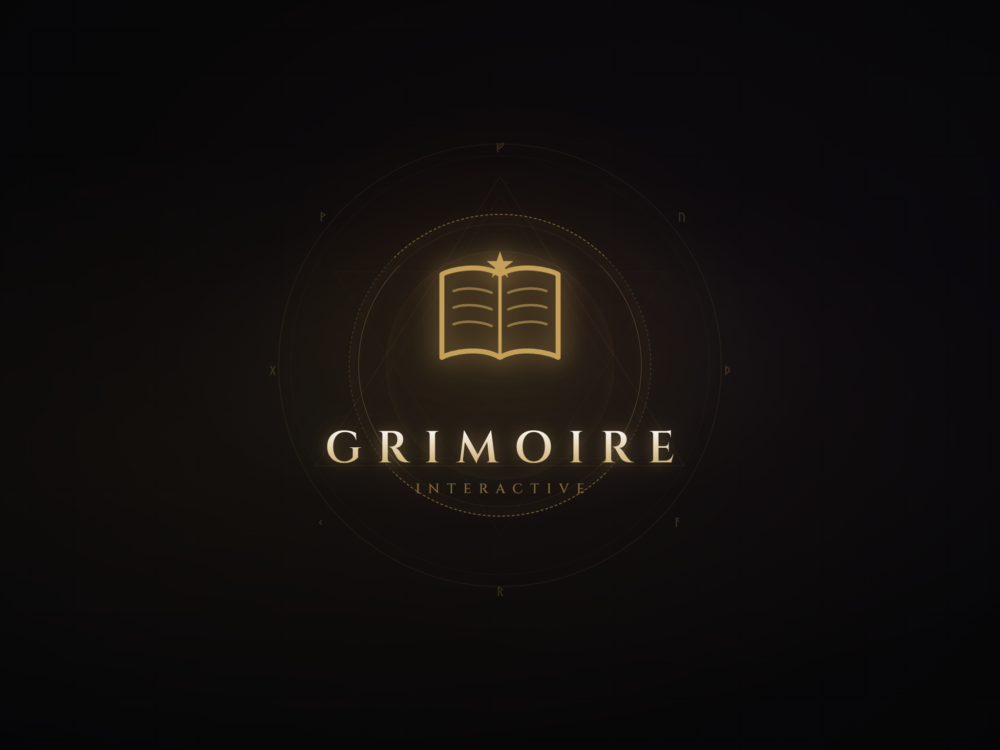

Studio
Über uns
Ein Ein-Personen-Studio. Kein Publisher, kein Live-Service — Handwerk im Halbdunkel.

Grimoire Interactive
Handwerk im Halbdunkel
Hier entstehen ruhige, dichte Spiele über das Erinnern und Vergessen — von der ersten Zeile Code bis zum letzten Farbton des Nebels in einer Hand. Sorgfältig versiegelte Welten, die darauf warten, geöffnet zu werden.
Person
Max Jotanovic
Ich bin Solo-Entwickler hinter Grimoire Interactive, ansässig in Ratingen (Deutschland).
Design, Code, Atmosphäre und Kommunikation liegen in einer Hand — das begrenzt Tempo und Scope, hält aber Ton und Verantwortung klar.
Der aktuelle Fokus liegt auf Archiv des Vergessens: einem atmosphärischen Idle-RPG, das bewusst als frühe Alpha öffentlich ist.
Fortschritt und Richtung stehen im Devlog und auf der Roadmap — ohne Fake-Deadlines.
Fragen, Feedback oder Presse-Anfragen: Kontakt · kontakt@grimoire-interactive.de. Assets für Berichterstattung: Presse.